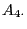
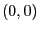
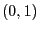
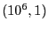
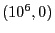
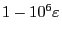

Next: Thin feasible regions Up: Instability and the geometry Previous: Multiple optimal solutions
The previous section considered the case of multiple (true) optimal
solutions. What happens when we have several -optimal
solutions? To be more specific, consider
The above statement is true whenever the distance between and is not too large. To see this, consider what happens when we change the right-hand side of  from 1 to . Then the feasible region would then be a very long rectangular box, with vertices , ,  and . Perhaps somewhat surprisingly, if is below the dual tolerance, simplex may consider optimal, even though its objective value is , which can be very relevant in terms of the final objective value.
Note that both situations share one ingredient: The objective function is (almost) parallel to one of the sides of the feasible region. In the first case, this side is relatively short, and thus jumping from to translate into a small change in objective value. In the second case, the side almost parallel to the objective function is very long, and now the jump from to can have a significant impact on the final objective function.
If you take out either of these two ingredients, namely the objective vector being almost parallel to a constraint, or the edge induced by this nearly-parallel constraint being very long, then this problem can not arise. For the reasons discussed at the beginning of this section, it is common for the objective function to be close to parallel to one or more constraints. Thus, the best way to avoid this situation is to avoid the second condition. The simplest way to do this is to ensure that the ranges for your variables are not too large. Please refer to the Scaling section for guidance on this.